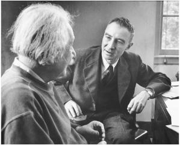

With J. Robert Oppenheimer, 1947
和奥本海默在一起，1947年
The rush to build the H-Bomb, rising anticommunist fervor, and Senator Joseph McCarthy’s increasingly untethered security investigations unnerved Einstein. The atmosphere reminded him of the rising Nazism and anti-Semitism of the 1930s. “The German calamity of years ago repeats itself,” he lamented to the queen mother of Belgium in early 1951. “People acquiesce without resistance and align themselves with the forces for evil.”1
氢弹的研制工作紧锣密鼓地进行，反共声浪愈演愈烈，参议员麦卡锡鼓吹的安全调查越来越肆无忌惮，所有这些都使爱因斯坦感到不安。这使他想起了20世纪30年代纳粹的上台和反犹主义的兴起。“几十年前德国的灾难正在重演，”他1951年年初向比利时王后悲叹道，“人们一味纵容默许，而不做任何抵抗，甘愿与恶势力为伍。”
He tried to maintain a middle ground between those who were reflexively anti-American and those who were reflexively anti-Soviet. On the one hand, he rebuked his collaborator Leopold Infeld, who wanted him to support statements by the World Peace Council, which Einstein rightly suspected was Soviet-influenced. “In my view they are more or less propaganda,” he said. He did the same to a group of Russian students who pressed him to join a protest against what they alleged was America’s use of biological weapons during the Korean War. “You cannot expect me to protest against incidents which possibly, and very probably, have never taken place,” he replied.2
他试图在反美和反苏人士之间保持中立。一方面，他的合作者英菲尔德希望他支持世界和平委员会的声明，他（正确地）怀疑这个委员会是受苏联操纵的，没有答应。“在我看来，这多多少少是一种宣传。”他说。一群苏联学生恳请他一同抗议所谓美国在朝鲜战争期间使用生物武器，他也同样予以批驳。“你们不能指望我抗议那些或许（而且十有八九）从未发生过的事情。”他回复说。
On the other hand, Einstein refrained from signing a petition circulated by Sidney Hook denouncing the perfidy of those who made such charges against America. He was enamored of neither extreme. As he put it, “Every reasonable person must strive to promote moderation and a more objective judgment.”3
另一方面，爱因斯坦也不愿在胡克散发的一份请愿书上签字，该请愿书斥责那些如此指控美国的人不够诚实。他不落于任何一个极端。正如他所说：“每一位有识之士都必须努力促进缓和，做出更为客观的判断。”
In what he presumed would be a quiet effort at promoting such moderation, Einstein wrote a private letter asking that Julius and Ethel Rosenberg, who had been convicted of turning over atomic secrets to the Soviets, be spared the death penalty. He had avoided making any statements about the case, which had divided the nation with a frenzy seldom seen before the advent of the cable-TV age. Instead, he sent the letter to the judge, Irving Kaufman, with a promise not to publicize it. Einstein did not contend that the Rosenbergs were innocent. He merely argued that a death penalty was too harsh in a case where the facts were murky and the outcome was driven more by popular hysteria than objectivity.4
为了不动声色地推进这种缓和，爱因斯坦写了一封私人信件，要求不要判朱利叶斯·罗森伯格和埃塞尔·罗森伯格死刑，他们被控将核机密泄露给了苏联人。此案已经使国家分成了激烈对立的两派，这在有线电视时代到来之前是很罕见的。爱因斯坦没有对这个案子发表任何看法。他将信寄给了主审法官欧文·考夫曼，并请他不要公布信的内容。他并没有说罗森伯格夫妇是清白的，他只是认为，对于这样一个案子来说，死刑过于严厉了，因为它的事实模糊不清，判决结果更多是受民众的狂热而非客观性所驱使。
In a reflection of the tenor of the time, Judge Kaufman took the private letter and turned it over to the FBI. Not only was it put into Einstein’s file, but it was investigated to see if it could be construed as disloyalty. After three months, a report was sent to Hoover saying no further incriminating evidence had been found, but the letter remained in the file.5
毫不奇怪，考夫曼法官把这封私人信件交给了联邦调查局。它不仅被收入爱因斯坦档案，而且遭到仔细审查，看它是否属于不忠之举。三个月后，一份报告送到了胡佛手中，说没有找到进一步的指控证据，不过这封信仍然放在爱因斯坦档案里。
When Judge Kaufman went ahead and imposed a death penalty, Einstein wrote to President Harry Truman, who was about to leave office, to ask him to commute the sentence. He drafted the letter first in German and then in English on the back of a piece of scrap paper that he had filled with a variety of equations that apparently, given how they trail off, led to nothing.6 Truman bucked the decision to incoming President Eisenhower, who allowed the executions to proceed.
由于考夫曼法官执意判决死刑，爱因斯坦给即将离任的杜鲁门总统写信，请求减刑。他在一张写满方程（显然没有得出任何结果）的纸的背面先用德语后又用英语起草了这封信。 杜鲁门把决定权交给了继任的艾森豪威尔总统，而艾森豪威尔则维持了死刑判决。
Einstein’s letter to Truman was released publicly, and the New York Times ran a front-page story headlined “Einstein Supports Rosenberg Appeal.”7 More than a hundred angry letters swept in from across the nation. “You need some common sense plus some appreciation for what America has given you,” wrote Marian Rawles of Portsmouth, Virginia. “You place the Jew first and the United States second,” said Charles Williams of White Plains, New York. From Corporal Homer Greene, serving in Korea: “You evidently like to see our GI’s killed. Go to Russia or back where you came from, because I don’t like Americans like you living off this country and making un-American statements.”8
爱因斯坦给杜鲁门的信最终被公之于众，《纽约时报》在头版做了报道，大标题为“爱因斯坦支持罗森伯格上诉”。 100多封愤怒的信从全国各地纷至沓来。“你需要一些常识，外加对美国的恩惠心存感激。”弗吉尼亚朴茨茅斯的玛丽安·罗尔斯写道。“你把犹太人放在第一位，而把美国放在第二位。”纽约怀特普莱恩斯（White Plains）的查尔斯·威廉斯说。在朝鲜服役的下士霍默·格林说：“你显然希望看到我们美国兵被杀掉。去苏联吧，或者回你的老家，因为我不喜欢你这样的美国人既靠这个国家生活，又发表反美言论。”
There were not as many positive letters, but Einstein did have a pleasant exchange with the liberal Supreme Court Justice William O. Douglas, who had unsuccessfully tried to stop the executions.“You have struggled so devotedly for the creation of a healthy public opinion in our troubled time,” Einstein wrote in a note of appreciation. Douglas sent back a handwritten reply: “You have paid me a tribute which brightens the burdens of this dark hour—a tribute I will always cherish.”9
持肯定意见的信件并不多，不过爱因斯坦与最高法院法官威廉·道格拉斯进行了愉快的通信。道格拉斯试图阻止执行死刑，但没有成功。“为了在我们这个不安的时代创造一种健康的舆论，您已经尽心尽力了。”爱因斯坦写信表示赞赏。道格拉斯回信说：“您对我的褒扬使这段黑暗的时间光亮起来，我将永远铭记在心。”
Many of the critical letters asked Einstein why he was willing to speak out for the Rosenbergs but not for the nine Jewish doctors whom Stalin had put on trial as part of an alleged Zionist conspiracy to murder Russian leaders. Among those who publicly challenged what they saw as Einstein’s double standard were the publisher of the New York Post and the editor of the New Leader.10
许多批评信质问爱因斯坦，为何为罗森伯格夫妇辩护，却不愿为被斯大林投入监牢的九位犹太医生讲好话，这几个犹太人被指控参与了犹太复国主义者暗杀苏联领导人的阴谋。《纽约邮报》的出版人和《新领袖》的编辑都公开指责爱因斯坦坚持双重标准。
Einstein agreed that the Russian actions should be denounced. “The perversion of justice which manifests itself in all the official trials staged by the Russian government deserves unconditional condemnation,” he wrote. He added that individual appeals to Stalin would probably not do much, but perhaps a joint declaration from a group of scholars would help. So he got together with the chemistry Nobel laureate Harold Urey and others to issue one. “Einstein and Urey Hit Reds’ Anti-Semitism,” the New York Times reported.11 (After Stalin died a few weeks later, the doctors were freed.)
爱因斯坦也认为苏联的行为应当受到谴责。“苏联政府在所有官方审讯中对正义的扭曲应当毫无保留地予以谴责。”他写道。他又说，个人向斯大林呼吁可能不会起什么作用，也许一群学者发表联合声明会有帮助。于是，他联合诺贝尔化学奖得主哈罗德·尤里等人发表了联合声明。“爱因斯坦和尤里打击了共产主义者的反犹主义。”《纽约时报》报道。 （几周以后，斯大林逝世，那些医生被释放。）
On the other hand, he stressed in scores of letters and statements that Americans should not let the fear of communism cause them to surrender the civil liberties and freedom of thought that they cherished. There were a lot of domestic communists in England, but the people there did not get themselves whipped into a frenzy by internal security investigations, he pointed out. Americans need not either.
另一方面，他在许多信件和声明中都强调，美国人不应由于害怕共产主义而放弃他们所珍视的公民自由和思想自由。他指出，在英国国内有更多的共产主义者，但那里的人并没有因国内的安全调查而陷入狂乱。美国人也不必如此。
Every year, Lord & Taylor department stores gave an award that, especially in the early 1950s, might have seemed unusual. It honored independent thinking, and Einstein, fittingly, won it in 1953 for his “nonconformity” in scientific matters.
每一年，洛德和泰勒（L ord h&Taylor）百货公司都会颁发一个独立思考奖。在20世纪50年代初，这一举措也许显得尤为不同寻常。1953年，爱因斯坦实至名归地因其在科学上的“标新立异”而获奖。
Einstein took pride in that trait, which he knew had served him well over the years. “It gives me great pleasure to see the stubbornness of an incorrigible nonconformist warmly acclaimed,” he said in his radio talk accepting the award.
爱因斯坦对这一特点感到自豪，他知道自己多年来得益于此甚多。“看到一个无可救药的标新立异者的顽固受到大家的热情赞许，确实让我感到莫大的愉快。”他在接受这一奖项的广播讲话中说。
Even though he was being honored for his nonconformity in the field of science, Einstein used the occasion to turn attention to the McCarthy-style investigations. For him, freedom in the realm of thought was linked to freedom in the realm of politics. “To be sure, we are concerned here with nonconformism in a remote field of endeavor,” he said, meaning physics. “No Senatorial committee has as yet felt compelled to tackle the task of combating in this field the dangers that threaten the inner security of the uncritical or intimidated citizen.”12
尽管是因为在科学领域的标新立异而获此殊荣，但爱因斯坦利用这一场合谈到了麦卡锡式的调查。“当然，大家是在对一个冷僻领域（物理学）中的标新立异者欢呼，在这一领域，参议院尚未感到有必要抗击国内缺乏批判力或胆小的公民的安全威胁。”
Listening to his talk was a Brooklyn schoolteacher, William Frauenglass, who had a month earlier been called to testify in Washington before a Senate Internal Security Subcommittee looking into communist influence in high schools. He had refused to talk, and now he wanted Einstein to say whether he had been right.
一位名叫理查德·弗劳恩格拉斯的布鲁克林的中学教师收听了他的讲话。一个月前，他曾被调查共产主义在中学影响的参议院内部安全小组委员会传唤到华盛顿作证，他拒绝发表意见。现在他想问爱因斯坦他这样做是否正确。
Einstein crafted a reply and told Frauenglass he could make it public. “The reactionary politicians have managed to instill suspicions of all intellectual efforts,” he wrote. “They are now proceeding to suppress the freedom of teaching.” What should intellectuals do against this evil? “Frankly, I can only see the revolutionary way of non-cooperation in the sense of Gandhi’s,” Einstein declared. “Every intellectual who is called before one of the committees ought to refuse to testify.”13
爱因斯坦回了信，并告诉弗劳恩格拉斯可以公开这封信。“反动政客在设法向公众灌输一种思想，让他们怀疑一切理智的努力，”他写道，“现在，他们又来压制教学自由。”知识分子应当如何来反抗这种罪恶？“坦率地讲，我看只有采用甘地所主张的那种不合作的革命方法，”爱因斯坦说，“每一位受到委员会传讯的知识分子都应当拒绝作证。”
Einstein’s lifelong comfort in resisting prevailing winds made him serenely stubborn during the McCarthy era. At a time when citizens were asked to name names and testify at inquiries into their loyalty and that of their colleagues, he took a simple approach. He told people not to cooperate.
爱因斯坦一直拒绝流行时尚，这不仅使他终生受益，也使他在麦卡锡时代固执己见。在那个时代，人们常常被要求说出别人的名字，并在对他们及其同事的忠诚调查中作证，爱因斯坦的做法却很简单：不要合作。
He felt, as he told Frauenglass, that this should be done based on the free speech guarantees of the First Amendment, rather than the “subterfuge” of invoking the Fifth Amendment’s protection against possible self-incrimination. Standing up for the First Amendment was particularly a duty of intellectuals, he said, because they had a special role in society as preservers of free thought. He was still horrified that most intellectuals in Germany had not risen in resistance when the Nazis came to power.
正如他对弗劳恩格拉斯所说，他认为这应当以第一修正案所保证的言论自由为根据，而不是援引防止自己受到牵连的第五修正案作为“托词”。他说，维护第一修正案尤其是知识分子的义务，因为他们在社会中扮演着维护自由思想的特殊角色。纳粹上台时，德国大多数知识分子都没有站出来声讨，这仍然使他感到惊骇。
When his letter to Frauenglass was published, there was an even greater public uproar than had been provoked by his Rosenberg appeal. Editorial writers across the nation pulled out all the stops for their denunciatory chords.
他给弗劳恩格拉斯的信发表后，所引发的轩然大波甚至超过了他对罗森伯格案件的呼吁。全国的社论群起而攻之。
The New York Times: “To employ unnatural and illegal forces of civil disobedience, as Professor Einstein advises, is in this case to attack one evil with another. The situation which Professor Einstein rebels against certainly needs correction, but the answer does not lie in defying the law.”
《纽约时报》：“在这种情况下，爱因斯坦教授建议运用公民不服从这一人为的不合法力量无异于以毒攻毒。爱因斯坦教授所反抗的情形固然需要纠正，但出路并不在于违反法律。”
The Washington Post: “He has put himself in the extremist category by his irresponsible suggestion. He has proved once more that genius in science is no guarantee of sagacity in political affairs.”
《华盛顿邮报》：“他不负责任的建议，已经将他归入了极端主义者的行列。这又一次证明，科学上的天才绝不能保证政治上的睿智。”
The Philadelphia Inquirer: “It is particularly regrettable when a scholar of his attainments, full of honors, should permit himself to be used as an instrument of propaganda by the enemies of the country that has given him such a secure refuge ... Dr. Einstein has come down from the stars to dabble in ideological politics, with lamentable results.”
《费城问讯者报》：“看到一个颇有成就、获得无数荣誉的学者竟然被为他提供避难所的国家的敌人用作宣传工具，真是特别可悲……爱因斯坦博士从星空中下来染指意识形态的政治，结果令人悲叹。”
The Chicago Daily Tribune: “It is always astonishing to find that a man of great intellectual power in some directions is a simpleton or even a jackass in others.”
《芝加哥论坛报》：“发现一个人在某些方面智力超群，在另一些方面却是愚不可及，总是令人感到惊讶。”
The Pueblo (Colorado) Star-Journal: “He, of all people, should know better. This country protected him from Hitler.”14
《普韦布洛（Pueblo）星报》：“在所有人当中，他最应该知道，是这个国家保护他没有落入希特勒的魔掌。”
Ordinary citizens wrote as well. “Look in the mirror and see how disgraceful you look without a haircut like a wild man and wear a Russian wool cap like a Bolshevik,” said Sam Epkin of Cleveland. The anticommunist columnist Victor Lasky sent a handwritten screed: “Your most recent blast against the institutions of this great nation finally convinces me that, despite your great scientific knowledge, you are an idiot, a menace to this country.” And George Stringfellow of East Orange, New Jersey, noted incorrectly, “Don’t forget that you left a communist country to come here where you could have freedom. Don’t abuse that freedom sir.”15
普通人也给他写了信。“好好照照镜子，看看没有疯子一般的发型，你是多么丑陋，像布尔什维克那样戴一顶俄国羊毛帽子吧。”克利夫兰的萨姆·艾普金说。反共专栏作家维克多·拉斯基寄给他一封冗长的信：“你最近对这个伟大国家的制度的攻击最终使我确信，尽管你有许多科学知识，但却是个傻瓜，是对这个国家的威胁。”新泽西州东奥兰治（East Orange）的乔治·斯特林费洛不正确地指出：“不要忘了，你是从一个共产主义国家来到这里才获得自由的。不要滥用这种自由，先生。”
Senator McCarthy also issued a denunciation, though it seemed slightly muted due to Einstein’s stature. “Anyone who advises Americans to keep secret information which they have about spies and saboteurs is himself an enemy of America,” he said, not quite aiming directly at Einstein or what he had written.16
参议员麦卡锡也进行了责难，尽管语气因为爱因斯坦的身份而有所收敛。“无论是谁，只要劝说美国人把关于间谍和破坏活动的情报保密，他就是美国的敌人。”他没有指名道姓地说。
This time, however, there were actually more letters in support of Einstein. Among the more amusing ripostes came from his friend Bertrand Russell. “You seem to think that one should always obey the law, however bad,” the philosopher wrote to the New York Times. “I am compelled to suppose that you condemn George Washington and hold that your country ought to return to allegiance to Her Gracious Majesty, Queen Elisabeth II. As a loyal Briton, I of course applaud this view; but I fear it may not win much support in your country.” Einstein wrote Russell a thank-you letter, lamenting, “All the intellectuals in this country, down to the youngest student, have become completely intimidated.”17
然而这一次，实际上更多的信是支持爱因斯坦的。他的朋友罗素的还击比较有趣。“你们似乎认为，无论法律有多么坏，都应当遵守，”哲学家给《纽约时报》写信说，“我不由得设想你们会判乔治·华盛顿的罪，主张你的国家应当回过头来效忠于伊丽莎白二世陛下。作为一个忠诚的英国人，我当然举双手赞成，但只怕它在你们国家中得不到太多支持。”爱因斯坦给罗素写了一封感谢信，悲叹道：“这个国家的所有知识分子，以至最年轻的学生，全都受到威胁。”
Abraham Flexner, now retired from the Institute for Advanced Studies and living on Fifth Avenue, took the opportunity to restore his relationship with Einstein. “I am grateful to you as a native American for your fine letter to Mr. Frauenglass,” he wrote. “American citizens in general will occupy a more dignified position if they absolutely refuse to say a word if questioned about their personal opinions and beliefs.”18
弗莱克斯纳已从高等研究院退休，现居第五大街，他希望利用这次机会修复与爱因斯坦的关系。“作为一个土生土长的美国人，我感谢你写给弗劳恩格拉斯的出色的信，”他写道，“如果在被问到个人观点和信仰时绝对缄口不言，一般美国公民的地位将会更为高贵。”
Among the most poignant notes was from Frauenglass’s teenage son, Richard. “In these troubled times, your statement is one that might alter the course of this nation,” he said, which had a bit of truth to it. He noted that he would cherish Einstein’s letter for the rest of his life, then added a P.S.: “My favorite subjects are your favorite too—math and physics. Now I am taking trigonometry.”19
弗劳恩格拉斯十几岁的儿子理查德说的话很令人心酸：“在这样一个不安的时代，您的声明也许会改变这个国家的进程。”这倒是有些道理。他说，他将终生珍藏爱因斯坦这封信，然后又补充了一句：“我最喜欢的科目也是你最喜欢的——数学和物理学。现在我正在学习三角。”
Dozens of dissenters subsequently begged Einstein to intervene on their behalf, but he declined. He had made his point and did not see the need to keep thrusting himself into the fray.
后来，数十位持不同政见者请求爱因斯坦站出来为他们说话，但他拒绝了。他认为自己的观点已经讲得很清楚，没有必要使自己不断陷入争执。
But one person did get through: Albert Shadowitz, a physics professor who had worked as an engineer during the war and helped form a union that was eventually expelled from the labor movement for having communists on its board. Senator McCarthy wanted to show that the union had ties to Moscow and had endangered the defense industry. Shadowitz, who had been a member of the Communist Party, decided to invoke the protections of the First, not the Fifth, Amendment, as Einstein had recommended to Frauenglass.20
但物理教授阿尔伯特·沙多维茨着实成功了。他在战争期间当过工程师，帮助建立了一个工会，后因委员会中有共产主义者而被开除出工人运动。参议员麦卡锡想证明这个工会与莫斯科有联系，曾给国防工业造成威胁。正如爱因斯坦向弗劳恩格拉斯建议的那样，曾是共产党员的沙多维茨决定援引第一修正案而非第五修正案作为保护。
Shadowitz was so worried about his plight that he decided to call Einstein for support. But Einstein’s number was unlisted. So he got into his car in northern New Jersey, drove to Princeton, and showed up at Einstein’s house, where he was met by the zealous guardian Dukas. “Do you have an appointment?” she demanded. He admitted he didn’t. “Well, you can’t just come in and speak to Professor Einstein,” she declared. But when he explained his story, she stared at him for a while, then waved him in.
沙多维茨很担心自己的处境，他决定打电话向爱因斯坦求助。但爱因斯坦的电话号码没有列出来，于是他开车从北新泽西来到了爱因斯坦在普林斯顿的住所，在那里见到了忠于职守的门卫杜卡斯。“您约好了吗？”她问。他承认没有。那么您不能进屋与爱因斯坦教授谈话。”她宣布。但是听他解释了情况后，杜卡斯盯着他看了一会儿，让他进去了。
Einstein was wearing his usual attire: a baggy sweatshirt and corduroy trousers. He took Shadowitz upstairs to his study and assured him that his actions were right. He was an intellectual, and it was the special duty of intellectuals to stand up in such cases. “If you take this path then feel free to use my name in any way that you wish,” Einstein generously offered.
爱因斯坦还是一贯的装束：宽松的套衫、灯芯绒裤子。他带沙多维茨来到楼上书房，称其做法是正确的。他是一个知识分子，在这些情况下挺身而出是知识分子的义务。“如果你这样做了，我的名字可随意使用。”爱因斯坦慷慨地说。
Shadowitz was surprised by the blank check, but happy to use it. McCarthy’s chief counsel, Roy Cohn, did the questioning as McCarthy listened during the initial closed hearing. Was he a communist? Shadowitz replied: “I refuse to answer that and I am following the advice of Professor Einstein.” McCarthy suddenly took over the questioning. Did he know Einstein? Not really, Shadowitz answered, but I’ve met him. When the script was replayed in an open hearing, it made the same type of headlines, and provoked the same spurt of mail, as the Frauenglass case had.
面对这张空头支票，沙多维茨又惊又喜。在第一次秘密听证会上，麦卡锡的首席顾问罗伊·科恩向沙多维茨发问，麦卡锡在一旁听着。他是共产主义者吗？沙多维茨答道：“我拒绝回答这个问题，我采用的是爱因斯坦教授的建议。”麦卡锡忽然问他是否认识爱因斯坦。沙多维茨回答说，其实不认识，但见过面。当这一幕在公开听证会上重演时，台词没有什么变化。和弗劳恩格拉斯案一样，这件事又激起了轩然大波。
Einstein believed he was being a good, rather than a disloyal, citizen. He had read the First Amendment and felt that upholding its spirit was at the core of America’s cherished freedom. One angry critic sent him a copy of a card that contained what he called “The American Creed.” It read, in part, “It is my duty to my country to love it; to support its Constitution; to obey its laws.” Einstein wrote on the edge, “This is precisely what I have done.”21
爱因斯坦相信他是一个好公民，而并非不忠。他读过第一修正案，认为支持它的精神恰恰是美国人所珍视的自由的核心。有一位愤怒的批评者寄给他一张卡片的复制品，上面含有他所谓的“美国信条”，其部分内容是：“我有热爱祖国、拥护宪法、遵守法律的义务。”爱因斯坦在边缘处写道：“这正是我所做的事情。”
When the great black scholar W.E.B. Du Bois was indicted on charges stemming from helping to circulate a petition initiated by the World Peace Council, Einstein volunteered to testify as a character witness on his behalf. It represented a union of Einstein’s sentiments on behalf of civil rights and of free speech. When Du Bois’s lawyer informed the court that Einstein would appear, the judge rather quickly decided to dismiss the case.22
当著名黑人学者杜波伊斯被指控传播由世界和平委员会发布的一份请愿书时，爱因斯坦主动为他作证。这份请愿书代表着爱因斯坦支持公民权利和言论自由的主要观点。当杜波伊斯的律师告知法庭爱因斯坦将会到场之后，法官旋即决定驳回此案。
Another case hit closer to home: that of J. Robert Oppenheimer. After leading the scientists who developed the atom bomb and then becoming head of the Institute where Einstein still puttered in to work, Oppenheimer remained an adviser to the Atomic Energy Commission and kept his security clearance. By initially opposing the development of the hydrogen bomb, he had turned Edward Teller into an adversary, and he also alienated AEC commissioner Lewis Strauss. Oppenheimer’s wife, Kitty, and his brother, Frank, had been members of the Communist Party before the war, and Oppenheimer himself had associated freely with party members and with scientists whose loyalty came under question.23
另一桩案件发生在家门口，那就是奥本海默事件。在领导众多科学家研制出原子弹之后，奥本海默出任普林斯顿高等研究院的院长，同时仍然担任原子能委员会的顾问，拥有忠诚审查的特许。由于当初反对研制氢弹，他与泰勒交恶，而且与原子能委员会的委员刘易斯·斯特劳斯疏远。奥本海默的妻子基蒂和他的弟弟弗兰克在战前都曾是共产党员，他本人则与共产党员以及忠诚可疑的科学家过从甚密。
All of this prompted an effort in 1953 to strip Oppenheimer of his security clearance. It would have expired soon anyway, and everyone could have allowed the matter to be resolved quietly, but in the heated atmosphere neither Oppenheimer nor his adversaries wanted to back away from what they saw as a matter of principle. So a secret hearing was scheduled in Washington.
所有这些都促成了1953年剥夺了对奥本海默忠诚审查的特许。本来它不用多久就会失效，这件事本可以不动声色地得到解决，但在那种狂热气氛下，奥本海默和他的对手都不希望背离自己所标榜的原则，遂决定在华盛顿举行秘密听证会。
One day at the Institute, Einstein ran into Oppenheimer, who was preparing for the hearings. They chatted for a few minutes, and when Oppenheimer got to his car he recounted the conversation to a friend. “Einstein thinks that the attack on me is so outrageous that I should just resign,” he said. Einstein considered Oppenheimer “a fool” for even answering the charges. Having served his country admirably, he had no obligations to subject himself to a “witch hunt.”24
有一天，爱因斯坦在研究院碰到了正在准备听证会的奥本海默，他们聊了一会儿。奥本海默上了汽车，向一位朋友讲述了他们的谈话。“爱因斯坦认为我受到的攻击太过分了，我应当辞职。”他说。爱因斯坦认为，奥本海默甚至没有必要回应那些指控，这足以见得他是“一个傻瓜”。在为国家立下汗马功劳之后，他没有义务让自己受“政治迫害”。
A few days after the secret hearings finally began—in April 1954, just as CBS journalist Edward R. Murrow was taking on Joseph McCarthy and the controversy over security investigations was at its height—they became public through a page-1 exclusive by James Reston of the New York Times.25 The issue of the government’s investigation of Oppenheimer’s loyalty instantly became another polarizing public debate.
1954年4月，正当哥伦比亚广播公司记者爱德华·默罗与麦卡锡进行较量，关于安全调查的争论趋于白热化之际，秘密听证会还是举行了。过了几天，詹姆斯·莱斯顿在《纽约时报》的整个头版公布了听证会的内容。 奥本海默的忠诚受政府调查的事件瞬间又成了人们争论的焦点话题。
Warned that the story was about to break, Abraham Pais went to Mercer Street to make sure that Einstein was prepared for the inevitable press calls. He was bitterly amused when Pais told him that Oppenheimer continued to insist on a hearing rather than simply cutting his ties with the government. “The trouble with Oppenheimer is that he loves a woman who doesn’t love him—the United States government,” Einstein said. All Oppenheimer had to do, Einstein told Pais, was “go to Washington, tell the officials that they were fools, and then go home.”26
由于有消息说，报道可能会突然转向，派斯来到梅瑟街，让爱因斯坦对媒体打来电话做好思想准备。派斯告诉他，奥本海默继续坚持参加听证会，而不是与政府直接断绝关系。爱因斯坦苦笑着说：“奥本海默的麻烦在于，他爱上了一个不爱他的女人——美国政府。”他告诉派斯，奥本海默需要做的就是，“到华盛顿对官员们说他们是傻瓜，然后回家”。
Oppenheimer lost. The AEC voted that he was a loyal American but also a security risk and—one day before it would have expired anyway—revoked his clearance. Einstein visited him at the Institute the next day and found him depressed. That evening he told a friend that he did not “understand why Oppenheimer takes the business so seriously.”
奥本海默失败了。原子能委员会经投票表决认定，他是一个忠诚的美国人，但存在着安全危险，于是（在失效的前一天）撤销他的忠诚审查特许。第二天，爱因斯坦到研究院看望了他，发现他很沮丧。当天晚上，爱因斯坦对一个朋友说，他“不明白奥本海默为何把这件事看得那么认真”。
When a group of Institute faculty members circulated a petition affirming support for their director, Einstein immediately signed up. Others initially declined, some partly out of fear. This galvanized Einstein. He “put his ‘revolutionary talents’ into action to garner support,” a friend recalled. After a few more meetings, Einstein had helped to convince or shame everyone into signing the statement.27
研究院的一些成员发起了一份请愿书来支持院长，爱因斯坦立即在上面签了字。其他人一开始拒绝了，其中有些人是出于恐惧。这刺激了爱因斯坦。他“运用其‘革命才能’来募集支持”，一位朋友回忆说。开了几次会之后，爱因斯坦说服所有人在声明上签了字。
Lewis Strauss, Oppenheimer’s AEC antagonist, was on the board of the Institute, which worried the faculty. Would he try to get Oppenheimer fired? Einstein wrote his friend Senator Herbert Lehman of New York, another trustee, calling Oppenheimer “by far the most capable Director the Institute has ever had.” Dismissing him, he said, “would arouse the justified indignation of all men of learning.”28 The trustees voted to keep him.
奥本海默在原子能委员会的对手刘易斯·斯特劳斯是研究院的理事，这让教授们很担忧。他会试图解雇奥本海默吗？爱因斯坦给另一位理事会成员朋友——纽约州参议员赫伯特·雷曼写信称，奥本海默“是迄今为止研究院最有能力的院长”，开除他“将会激起所有知识分子的义愤”。 于是理事会投票保留了他。
Soon after the Oppenheimer affair, Einstein was visited in Princeton by Adlai Stevenson, the once and future Democratic nominee for president, who was a particular darling among intellectuals. Einstein expressed concern at the way politicians were whipping up fear of communism. Stevenson replied somewhat circumspectly. The Russians were, in fact, a danger. After some more gentle back and forth, Stevenson thanked Einstein for endorsing him in 1952. There was no need for thanks, Einstein replied, as he had done so only because he trusted Eisenhower even less. Stevenson said he found such honesty refreshing, and Einstein decided that he was not quite as pompous as he had originally seemed.29
奥本海默事件发生后不久，曾经的和未来的民主党总统候选人阿德莱·斯蒂文森到普林斯顿拜访了爱因斯坦，他很受知识分子喜爱。爱因斯坦对他说，政客们正在煽动对共产主义的恐惧，这让他很是不安。斯蒂文森比较谨慎地回应说，其实苏联是一个威胁。在谈了一些次要话题之后，斯蒂文森感谢爱因斯坦在1952年给予他支持。爱因斯坦说，没有必要感谢，他这样做只是因为他更不信任艾森豪威尔。斯蒂文森说，他喜欢这种诚实。爱因斯坦认为他并不像初看起来那样自命不凡。
Einstein’s opposition to McCarthyism arose partly out of his fear of fascism. America’s most dangerous internal threat, he felt, came not from communist subversives but from those who used the fear of communists to trample civil liberties. “America is incomparably less endangered by its own Communists than by the hysterical hunt for the few Communists that are here,” he told the socialist leader Norman Thomas.
爱因斯坦对麦卡锡主义的反抗部分源于他对法西斯主义的担忧。他感到，美国最危险的内部威胁并非来自共产主义破坏分子，而是来自于那些利用对共产主义者的恐惧来践踏公民自由的人。“与在这里疯狂搜捕寥寥几位共产主义者相比，美国受本国共产主义者的威胁要小得多。”他对社会主义领导人诺曼·托马斯说。
Even to people he did not know, Einstein expressed his disgust in unvarnished terms. “We have come a long way toward the establishment of a Fascist regime,” he replied to an eleven-page letter sent to him by a New Yorker he had never met. “The similarity of general conditions here to those in the Germany of 1932 is quite obvious.”30
甚至对不认识的人，爱因斯坦也用质朴的话语表达了他的厌恶。一个从未谋面的纽约人给他写了一封11页的信，他回信说：“我们已经在建立法西斯政权的道路上走得很远，我们这里总的状况与1932年的德国何其相似。”
Some colleagues worried that Einstein’s vocal opinions would cause controversy for the Institute. Such concerns, he joked, made his hair turn gray. Indeed, he took a boyish American glee at his freedom to say whatever he felt. “I have become a kind of enfant terrible in my new homeland due to my inability to keep silent and to swallow everything that happens,” he wrote Queen Mother Elisabeth. “Besides, I believe that older people who have scarcely anything to lose ought to be willing to speak out in behalf of those who are young and are subject to much greater restraint.”31
一些同事担心，爱因斯坦发表的观点会引起人们对研究院的争论。他开玩笑说，他为此而急白了头发。实际上，他以一种美国式的孩子气自由表达着自己的感受。“在我这个新祖国里，由于我无法保持沉默，无法忍受在这里发生的一切，我已经成了一个‘专爱捣乱的人’（enfant terrible.），”他写信给伊丽莎白王后，“而且，我认为上了年纪的人已经没有什么可以失去的，他们应当站出来为受到更多约束的年轻人说话。”
He even announced, in tones both grave and a bit playful, that he would not have become a professor given the political intimidation that now existed. “If I were a young man again and had to decide how to make a living, I would not try to become a scientist or scholar or teacher,” he intoned to Theodore White of the Reporter magazine. “I would rather choose to be a plumber or a peddler, in the hope of finding that modest degree of independence still available.”32
他甚至亦庄亦谐地宣布，鉴于目前的政治胁迫，他不可能想做教授。“如果我重新是个青年人，并且要决定怎样去谋生，那么我绝不想做什么科学家、学者或教师，”他拖长声音对《记者》杂志的西奥多·怀特说道，“我宁愿做一个管道工或小贩，以希望在目前的情况下还能得到程度不高的独立性。”
That earned him an honorary membership card from a plumbers’ union, and it sparked a national debate on academic freedom. Even slightly frivolous remarks made by Einstein carried a lot of momentum.
这段话不仅使爱因斯坦获得了美国“管道业工会”授予的荣誉会员称号，而且引发了关于学术自由的全国辩论。即使爱因斯坦的一句比较无关紧要的评论也会引起广泛关注。
Einstein was right that academic freedom was under assault, and the damage done to careers was real. For example, David Bohm, a great theoretical physicist who worked with Oppenheimer and Einstein in Princeton and refined certain aspects of quantum mechanics, was called before the House Un-American Activities Committee, pleaded the Fifth Amendment, lost his job, and ended up moving to Brazil.
爱因斯坦看得很清楚，学术自由正在遭到蹂躏，这对事业的损害是实实在在的。例如，与奥本海默和爱因斯坦在普林斯顿共事的著名理论物理学家——在量子力学某些方面做出改进的玻姆，接到了美国众议院反美活动调查委员会的传讯，借口第五修正案而失去了工作，最后移居巴西。
Nevertheless, Einstein’s remark—and his litany of doom—turned out to be overstated. Despite his impolitic utterances, there was no serious attempt to muzzle him or threaten his job. Even the slapstick FBI efforts to compile a dossier on him did not curtail his free speech. At the end of the Oppenheimer investigation, both he and Einstein were still harbored safely in their haven in Princeton, free to think and speak as they chose. The fact that both men had their loyalty questioned and, at times, their security clearances denied was shameful. But it was not like Nazi Germany, not anything close, despite what Einstein sometimes said.
不过事实证明，爱因斯坦的说法（以及他一连串的厄运）是夸张之辞。尽管他有些话不够审慎，但他的言论并没有受到钳制，工作也没有受到威胁，甚至联邦调查局编纂爱因斯坦档案这场闹剧也没有剥夺他言论自由的权利。在奥本海默遭调查的最后阶段，他和爱因斯坦仍然安全藏身于普林斯顿的避难所，可以随意思考和发表意见。虽然两个人的忠诚都受到质疑，拒绝给他们忠诚调查特许有时很可耻，但这并不像在纳粹德国，任何事情都是秘密的，尽管爱因斯坦有时会发表不当言论。
Einstein and some other refugees tended, understandably, to view McCarthyism as a descent into the black hole of fascism, rather than as one of those ebbs and flows of excess that happen in a democracy. As it turned out, American democracy righted itself, as it always has. McCarthy was relegated to his own disgrace in 1954 by Army lawyers, his Senate colleagues, President Eisenhower, and journalists such as Drew Pearson and Edward R. Murrow. When the transcript of the Oppenheimer case was published, it ended up hurting the reputation of Lewis Strauss and Edward Teller, at least within the academic and scientific establishment, as much as that of Oppenheimer.
爱因斯坦和其他一些难民往往把麦卡锡主义看成法西斯主义的余波，而不是在民主制度中泛起的波澜，这是可以理解的。正如事实所证明的，和往常一样，美国的民主又重新恢复起来。1954年，麦卡锡遭到陆军律师、他的参议员同事、艾森豪威尔总统，以及德鲁·皮尔逊、爱德华·默罗等新闻记者贬斥。奥本海默案件的文字记录公布后，至少是在学术界和科学界，刘易斯·斯特劳斯和泰勒的声誉受到了损害，程度之深堪比奥本海默。
Einstein was not used to self-righting political systems. Nor did he fully appreciate how resilient America’s democracy and its nurturing of individual liberty could be. So for a while his disdain deepened. But he was saved from serious despair by his wry detachment and his sense of humor. He was not destined to die a bitter man.
爱因斯坦不习惯于能够自动复正的政治体制，也不能完全欣赏美国的民主及其对个人自由的培养是多么有弹性。所以过了一段时间，他的鄙夷加深了。但其冷嘲式的超然和幽默感使他没有沉溺于绝望。他死时注定不会痛苦。